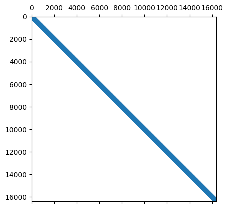
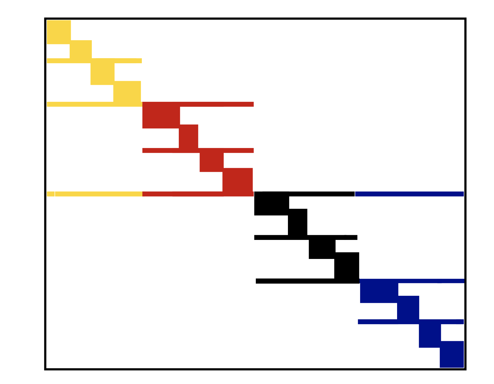

from IPython.display import IFrame
IFrame("http://yifanhu.net/GALLERY/GRAPHS/search.html", width=700, height=450)Recap of the previous lecture
- Randomized matmul
- Hutchinson trace estimator
- Randomized SVD
- Karcmarz
Plan of todays lecture
- Simple topic in parallel computing in NLA (on the matvec example)
- Sparse matrix part (with a separate plan)
Large scale dense matrices
- If the size of the dense matrix is huge, then it can not be stored in memory
- Possible options
- This matrix is structured, e.g. block Toeplitz with Toeptitz blocks (next lectures). Then the compressed storage is possible
- For unstructured dense matrices distributed memory helps
- MPI for processing distributed storing matrices
Distributed memory and MPI
- Split matrix into blocks and store them on different machines
- Every machine has its own address space and can not damage data on other machines
- In this case machines communicate with each other to aggregate results of computations
- MPI (Message Passing Interface) is a standard for parallel computing in distributed memory
Example: matrix-by-vector product
- Assume you want to compute Ax and matrix A can not be stored in available memory
- Then you can split it on blocks and distribute blocks on separate machines
- Possible strategies
- 1D blocking splits only rows on blocks
- 2D blocking splits both rows and columns
1D blocking scheme

Total time of computing matvec with 1D blocking
- Each machine has $n / p $ complete rows and n / p elements of vector
- Total operations are n^2 / p
- Total time for sending and writing data are t_s \log p + t_w n, where t_s time unit for sending and t_w time unit for writing
2D blocking scheme

Total time of computing matvec with 2D blocking
- Each machine has $n / $ size block and n / \sqrt{p} elements of vector
- Total operations are n^2 / p
- Total time for sending and writing data are approximately t_s \log p + t_w (n/\sqrt{p}) \log p, where t_s time unit for sending and t_w time unit for writing
Packages supported distributed storage
In Python you can use mpi4py for parallel programming of your algorithm.
- PyTorch supports distributed training and data storage, see details here
Summary on large unstructered matrix processing
- Distributed manner of storage
- MPI
- Packages that use parallel computations
- Different blocking strategies
Sparse matrices intro
For dense linear algebra problems, we are limited by the memory to store the full matrix, it is N^2 parameters.
The class of sparse matrices where most of the elements are zero, allows us at least to store such matrices.
The question if we can:
- solve linear systems
- solve eigenvalue problems
with sparse matrices
Plan for the next part of the lecture
Now we will talk about sparse matrices, where they arise, how we store them, how we operate with them.
- Formats: list of lists and compressed sparse row format, relation to graphs
- Matrix-by-vector product
- Parallell processing of sparse matrices
- Fast direct solvers for Gaussian elimination (start)
Applications of sparse matrices
Sparse matrices arise in:
- partial differential equations (PDE), mathematical modelling
- graphs mining, e.g. social networks analysis
- recommender systems
- wherever relations between objects are “sparse”.
Sparse matrices are ubiquitous in PDE
The simplest partial differential equation (PDE), called
Laplace equation:
\Delta T = \frac{\partial^2 T}{\partial x^2} + \frac{\partial^2 T}{\partial y^2} = f(x,y), \quad x,y\in \Omega\equiv[0,1]^2,
T_{\partial\Omega} = 0.
Discretization
\frac{\partial^2 T}{\partial x^2} \approx \frac{T(x+h) + T(x-h) - 2T(x)}{h^2} + \mathcal{O}(h^2),
same for \frac{\partial^2 T}{\partial y^2}, and we get a linear system.
First, let us consider one-dimensional case:
After the discretization of the one-dimensional Laplace equation with Dirichlet boundary conditions we have
\frac{u_{i+1} + u_{i-1} - 2u_i}{h^2} = f_i,\quad i=1,\dots,N-1
u_{0} = u_N = 0 or in the matrix form
A u = f, and (for n = 5) A=-\frac{1}{h^2}\begin{bmatrix} 2 & -1 & 0 & 0 & 0\\ -1 & 2 & -1 & 0 &0 \\ 0 & -1 & 2& -1 & 0 \\ 0 & 0 & -1 & 2 &-1\\ 0 & 0 & 0 & -1 & 2 \end{bmatrix}
The matrix is triadiagonal and sparse
(and also Toeplitz: all elements on the diagonal are the same)
Block structure in 2D
In two dimensions, we get equation of the form
-\frac{4u_{ij} -u_{(i-1)j} - u_{(i+1)j} - u_{i(j-1)}-u_{i(j+1)}}{h^2} = f_{ij},
or in the Kronecker product form
\Delta_{2D} = \Delta_{1D} \otimes I + I \otimes \Delta_{1D},
where \Delta_{1D} is a 1D Laplacian, and \otimes is a Kronecker product of matrices.
For matrices A\in\mathbb{R}^{n\times m} and B\in\mathbb{R}^{l\times k} its Kronecker product is defined as a block matrix of the form
A\otimes B = \begin{bmatrix}a_{11}B & \dots & a_{1m}B \\ \vdots & \ddots & \vdots \\ a_{n1}B & \dots & a_{nm}B\end{bmatrix}\in\mathbb{R}^{nl\times mk}.
In the block matrix form the 2D-Laplace matrix can be written in the following form:
A = -\frac{1}{h^2}\begin{bmatrix} \Delta_1 + 2I & -I & 0 & 0 & 0\\ -I & \Delta_1 + 2I & -I & 0 &0 \\ 0 & -I & \Delta_1 + 2I & -I & 0 \\ 0 & 0 & -I & \Delta_1 + 2I &-I\\ 0 & 0 & 0 & -I & \Delta_1 + 2I \end{bmatrix}
Short list of Kronecker product properties
- It is bilinear
- (A\otimes B) (C\otimes D) = AC \otimes BD
- Let \mathrm{vec}(X) be vectorization of matrix X columnwise. Then \mathrm{vec}(AXB) = (B^T \otimes A) \mathrm{vec}(X).
Sparse matrices help in computational graph theory
- Graphs are represented with adjacency matrix, which is usually sparse
- Numerical solution of graph theory problems are based on processing of this sparse matrix
- Community detection and graph clustering
- Learning to rank
- Random walks
- Others
- Example: probably the largest publicly available hyperlink graph consists of 3.5 billion web pages and 128 billion hyperlinks, more details see here
- More medium scale graphs to test your algorithms are available in Stanford Large Network Dataset Collection
SuiteSpare matrix collection (formerly Florida sparse matrix collection)
More sparse matrices you can find in SuiteSparse matrix collection which contains all sorts of matrices for different applications.
Sparse matrices and deep learning
- DNN has a lot of parameters
- Some of them may be redundant
- How to prune the parameters without significantly accuracy reduction?
- Sparse variational dropout method leads to significantly sparse filters in DNN almost without accuracy decreasing: the idea of pruning
Sparse matrix: construction
We can create sparse matrix using scipy.sparse package (actually this is not the best sparse matrix package)
We can go to really large sizes (at least, to store this matrix in the memory)
Please note the following functions - Create sparse matrices with given diagonals spdiags - Kronecker product of sparse matrices kron - There is also overloaded arithmectics for sparse matrices
import numpy as np
import scipy as sp
import scipy.sparse
from scipy.sparse import csc_matrix, csr_matrix
import matplotlib.pyplot as plt
import scipy.linalg
import scipy.sparse.linalg
%matplotlib inline
n = 128
ex = np.ones(n);
lp1 = sp.sparse.spdiags(np.vstack((ex, -2*ex, ex)), [-1, 0, 1], n, n, 'csr');
e = sp.sparse.eye(n)
A = sp.sparse.kron(lp1, e) + sp.sparse.kron(e, lp1)
A = csc_matrix(A)
plt.spy(A, aspect='equal', marker='.', markersize=5)
Sparsity pattern
The
spycommand plots the sparsity pattern of the matrix: the (i, j) pixel is drawn, if the corresponding matrix element is non-zero.Sparsity pattern is really important for the understanding the complexity of the sparse linear algebra algorithms.
Often, only the sparsity pattern is needed for the analysis of “how complex” the matrix is.
Sparse matrix: definition
The definition of “sparse matrix” is that the number of non-zero elements is much less than the total number of elements.
You can do the basic linear algebra operations (like solving linear systems at the first place) faster, than if working for with the full matrix.
What we need to find out to see how it actually works
Question 1: How to store the sparse matrix in memory?
Question 2: How to multiply sparse matrix by vector fast?
Question 3: How to solve linear systems with sparse matrices fast?
Sparse matrix storage
There are many storage formats, important ones:
- COO (Coordinate format)
- LIL (Lists of lists)
- CSR (compressed sparse row)
- CSC (compressed sparse column)
- Block variants
In scipy there are constructors for each of these formats, e.g.
scipy.sparse.lil_matrix(A).
Coordinate format (COO)
The simplest format is to use coordinate format to represent the sparse matrix as positions and values of non-zero elements.
i, j, valwhere i, j are integer array of indices, val is the real array of matrix elements.
So we need to store 3\cdot nnz elements, where nnz denotes number of nonzeroes in the matrix.
Q: What is good and what is bad in this format?
Main disadvantages
- It is not optimal in storage (why?)
- It is not optimal for matrix-by-vector product (why?)
- It is not optimal for removing elements as you must make nnz operations to find one element (this is good in LIL format)
First two disadvantages are solved by compressed sparse row (CSR) format.
Compressed sparse row (CSR)
In the CSR format a matrix is stored as 3 different arrays:
ia, ja, sawhere:
- ia (row start) is an integer array of length n+1
- ja (column indices) is an integer array of length nnz
- sa (values) is an real-value array of length nnz

So, we got 2\cdot{\bf nnz} + n+1 elements.
Sparse matrices in PyTorch and Tensorflow
CSR helps in sparse matrix by vector product (SpMV)
for i in range(n):
for k in range(ia[i]:ia[i+1]):
y[i] += sa[k] * x[ja[k]]Let us do a short timing test
import numpy as np
import scipy as sp
import scipy.sparse
import scipy.sparse.linalg
from scipy.sparse import csc_matrix, csr_matrix, coo_matrix
import matplotlib.pyplot as plt
%matplotlib inline
n = 1024
ex = np.ones(n);
lp1 = sp.sparse.spdiags(np.vstack((ex, -2*ex, ex)), [-1, 0, 1], n, n, 'csr');
e = sp.sparse.eye(n)
A = sp.sparse.kron(lp1, e) + sp.sparse.kron(e, lp1)
A = csr_matrix(A)
rhs = np.ones(n * n)
B = coo_matrix(A)
%timeit A.dot(rhs)
%timeit B.dot(rhs)3.24 ms ± 74.4 μs per loop (mean ± std. dev. of 7 runs, 100 loops each)
19.7 ms ± 379 μs per loop (mean ± std. dev. of 7 runs, 100 loops each)As you see, CSR is faster, and for more unstructured patterns the gain will be larger.
Sparse matrices and efficiency
- Sparse matrices give complexity reduction.
- But they are not very good for parallel/GPU implementation.
- They do not give maximal efficiency due to random data access.
- Typically, peak efficiency of 10\%-15\% is considered good.
Recall how we measure efficiency of linear algebra operations
The standard way to measure the efficiency of linear algebra operations on a particular computing architecture is to use flops (number of floating point operations per second)
We can measure peak efficiency of an ordinary matrix-by-vector product.
import numpy as np
import time
n = 4000
k = 1400
a = np.random.randn(n, n)
v = np.random.randn(n, k)
t = time.time()
np.dot(a, v)
t = time.time() - t
print('Time: {0: 3.1e}, Efficiency: {1: 3.1e} Gflops'.\
format(t, ((k*2 * n ** 2)/t) / 10 ** 9))Time: 8.8e-02, Efficiency: 5.1e+02 Gflopsn = 4000000
k = 10
ex = np.ones(n)
a = sp.sparse.spdiags(np.vstack((ex, -2*ex, ex)), [-1, 0, 1], n, n, 'csr');
rhs = np.random.randn(n, k)
t = time.time()
a.dot(rhs)
t = time.time() - t
print('Time: {0: 3.1e}, Efficiency: {1: 3.1e} Gflops'.\
format(t, (3 * n * k) / t / 10 ** 9))Time: 9.5e-02, Efficiency: 1.3e+00 GflopsRandom data access and cache misses
- Initially all matrix and vector entries are stored in RAM (Random Access Memory)
- If you want to compute matvec, the part of matrix and vector elements are moved to cache (fast and small capacity memory, see lecture about Strassen algorithm)
- After that, CPU takes data from cache to proccess it and then returns result in cache, too
- If CPU needs some data that is not already in cache, this situation is called cache miss
- If cache miss happens, the required data is moved from RAM to cache
Q: what if cache does not have free space?
- The larger number of cache misses, the slower computations
CSR sparse matrix by vector product
for i in range(n):
for k in range(ia[i]:ia[i+1]):
y[i] += sa[k] * x[ja[k]]
- What part of operands is strongly led cache misses?
- How this issue can be solved?
Reordering reduces cache misses
If
jastores sequential elements, then they will be moved to cache altogether and number of cache misses decreasesThis happens when sparse matrix is banded or at least block diagonal
We can convert given sparse matrix to banded or block diagonal with permutations
Let P be row permutation matrix and Q be column permutation matrix
A_1 = PAQ is a matrix, which has less bandwith than A
y = Ax \to \tilde{y} = A_1 \tilde{x}, where \tilde{x} = Q^{\top}x and \tilde{y} = Py
Separated block diagonal form is a cache-oblivious format for sparse matrix by vector product
It can be extended for 2D, where separated not only rows, but also columns
Example
- SBD in 1D 
Sparse transpose matrix-by-vector product
- In some cases it is important to compute not only Ax for sparse A, but also A^{\top}x
- Mort details will be discussed in the lecture about Krylov methods for non-symmetric linear systems
- Transposing is computationally expensive
- Here is proposed compressed sparse block format of storage appropriate for this case
Compressed sparse block (CSB)
- Split matrix in blocks
- Store block indices and indices of data inside each block
- Thus, feasible number of bits to store indices
- Ordering of the blocks and inside blocks is impoprtant for parallel implementation
- Switching between blockrow to blockcolumn makes this format appropriate to transpose matrix by vector product
Solve linear systems with sparse matrices
- Direct methods
- LU decomposition
- Number of reordering techniques to minimize fill-in
- Krylov methods
Let us start with small demo of solving sparse linear system…
n = 1024
ex = np.ones(n);
lp1 = sp.sparse.spdiags(np.vstack((ex, -2*ex, ex)), [-1, 0, 1], n, n, 'csr');
e = sp.sparse.eye(n)
A = sp.sparse.kron(lp1, e) + sp.sparse.kron(e, lp1)
A = csr_matrix(A)
rhs = np.ones(n * n)
sol = sp.sparse.linalg.spsolve(A, rhs)
_, (ax1, ax2) = plt.subplots(1, 2)
ax1.plot(sol)
ax1.set_title('Not reshaped solution')
ax2.contourf(sol.reshape((n, n), order='f'))
ax2.set_title('Reshaped solution')Text(0.5, 1.0, 'Reshaped solution')
Take home message
- About parallel matrix-by-vector product and different blocking.
- CSR format for storage
- Cache and parallel issues in sparse matrix processing
- Reordering and blocking as a way to solve these issues
Questions?
from IPython.core.display import HTML
def css_styling():
styles = open("./styles/custom.css", "r").read()
return HTML(styles)
css_styling()